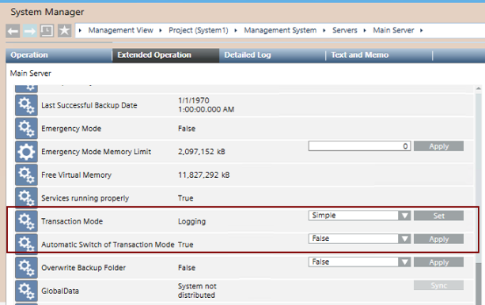

- Transaction Mode
The Transaction Mode is a property of the Main Server. It sets how data is written to the project database. Its value during normal operation is Logging. It may need to be switched to Simple to speed up bulk engineering activities (such as data import, backup, and so on). This switch can be performed manually, or you can set the system to always switch the Transaction Mode automatically (recommended).

Property | Values | Commands | |
|---|---|---|---|
Transaction Mode |
| Setting used during normal operation. | From the drop-down list select Simple or Logging and click Set. |
| Setting used for bulk engineering activities, for example, importing or backing up subsystem data. NOTE: To prevent data loss, the Desigo CC station generates an event when the Transaction Mode is set to | ||
Automatic Switch of Transaction Mode |
| The Transaction Mode is automatically set to | From the drop-down list select True or False and click Apply. |
| The Transaction Mode will not be automatically switched. The manual commands must be used to set it to | ||
Set Transaction Mode to Switch Automatically
You can enable automatic switching of the transaction mode as follows. This avoids having to manually switch the Transaction Mode before and after import operations.
- In System Browser, select Management View.
- Select Project > Management System > Servers > Main Server.
- Select the Extended Operation tab.
- Set Automatic Switch of Transaction Mode property to
True. - Click Apply.
- When any bulk engineering activities (such as subsystem data import, backup, and so on) starts, the Transaction Mode will be set to
Simpleautomatically, and then set back toLoggingfew minutes after the same bulk engineering activity is completed.
Manually Set the Transaction Mode
If the automatic switching is not enabled, the Transaction Mode must be manually set as follows:
- In System Browser, select Management View.
- Select Project > Management System > Servers > Main Server.
- In the Extended Operation tab, do the following:
- To increase system performance during bulk engineering activities, set Transaction Mode to
Simpleand then click Set. - When bulk engineering activities are completed, switch Transaction Mode back to
Loggingand then click Set.